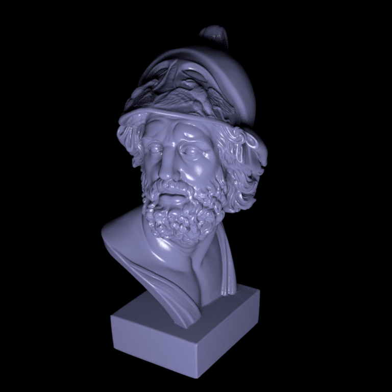
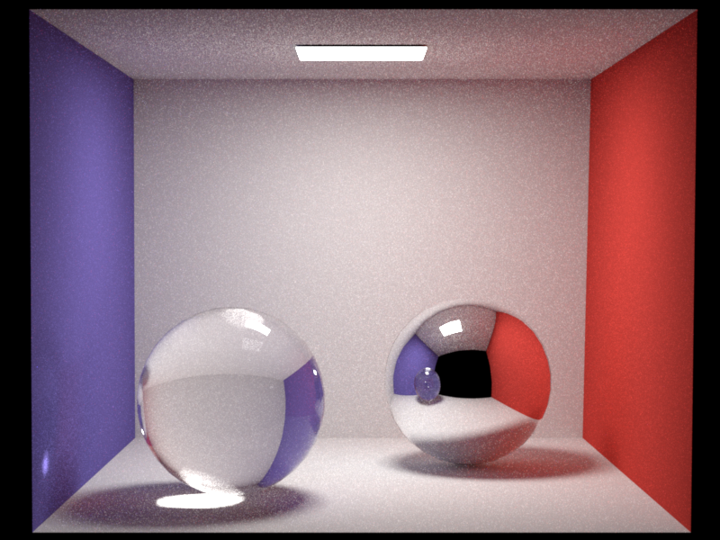
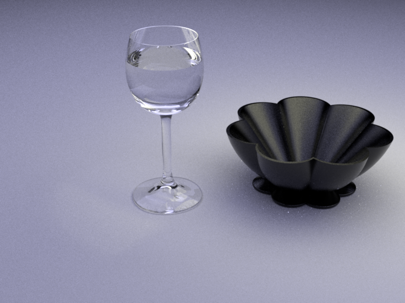
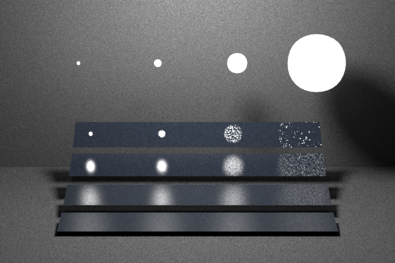
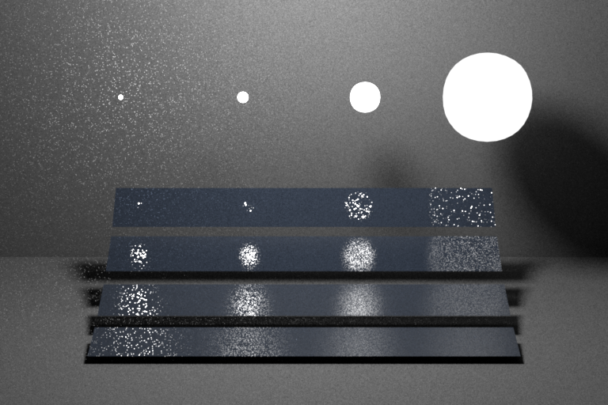
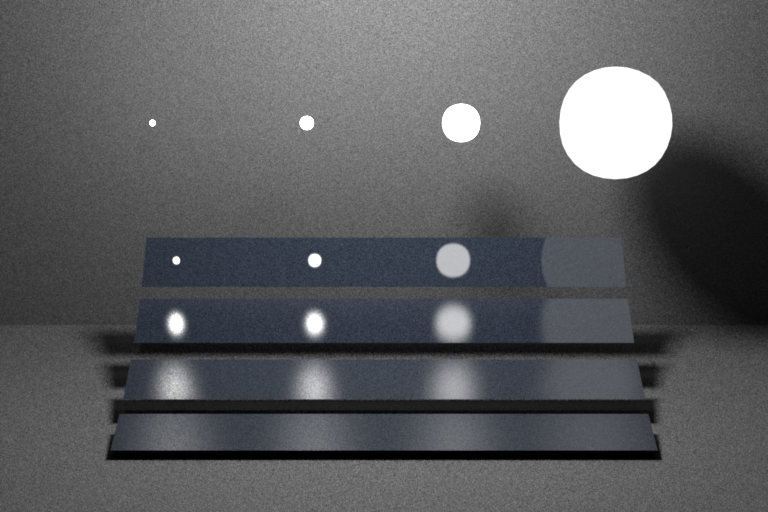

**Programming Assignment 5 - Hao Sun**
Feedback
========
* 1 hour for part 1.1-1.2 and report.
* 1.5 hours for part 1.3-1.4 and report.
* 10 hours for part 2-3 and report.
* 4 hours for hacker points
Part 1.1, 1.2: Beckmann distribution
===========================================
* Here I just follow the tutorial. One thing I need to do is to calculate inverse CDF.
* The $ \frac{1}{2\pi} $ term is for $ \phi $ part, so we can just ignore it and leave $ \phi $ term to $ sample.x() $.
* Now we need to calculate inverse function $ I(d_0) $ for $ D(\theta) = \frac{2 e^{\frac{-\tan{\theta}^2}{\alpha^2}}}{\alpha^2 \cos{\theta}^3} $, so $ \theta_0 = I(d_0) $ satisfies $ d_0 = \int_{0}^{\theta_0} \frac{2 e^{\frac{-\tan{\theta}^2}{\alpha^2}}}{\alpha^2 \cos{\theta}^3} \sin{\theta} \mathrm{d} \theta $. To make it simpler, let $ x = \cos{\theta} $ and $ I_1(d_0) = x_0 = \cos{I(d_0)} $, then we have
\begin{equation*}
\int_{0}^{\theta_0} \frac{2 e^{\frac{-\tan{\theta}^2}{\alpha^2}}}{\alpha^2 \cos{\theta}^3} \sin{\theta} \mathrm{d} \theta
= - \int_{1}^{x_0} \frac{2 e^{-\frac{1 - x^2}{\alpha^2 x^2}}}{\alpha^2 x^3} \mathrm{d}x
= \int_{x_0}^{1} \left( -\frac{1 - x^2}{\alpha^2 x^2} \right)'
e^{-\frac{1 - x^2}{\alpha^2 x^2}} \mathrm{d}x
= 1 - e^{-\frac{1}{\alpha^2 x_0^2} + \frac{1}{\alpha^2}} \\
I_1(d) = \sqrt{\frac{1}{1 - \alpha^2 \ln{(1 - d)}}} \\
d = sample.y(),\ \cos{\theta} = I_1(d),\ \sin{\theta} = \sqrt{1 - \cos{\theta}^2}
\end{equation*}
Part 1.3, 1.4: Microfacet BRDF
============================================
* I just follow the equations to do this part.
* A problem I met is that I forgot to scale the sample points to reuse it later. In 'warptest', 'kd' is always (0, 0, 0), so I spent almost a hour to find the bug.
Smooth Ajax

Rough Ajax
Part2: Simple Path tracer
=============================================
* I find that, with my previous strategy for sampling on light source, number of sample points is not enough for Veach scene, so I change the strategy.
* When I need to sample on light source, I need to select one light source first. In my previous implementation, I will select one light source with a probability corresponding to its area, which means larger light source get more samples. However, in Veach scene, we have five light sources, and they are somehow similar but have different size. Then we can't have too many samples on smaller light source with my previous strategy.
* The new strategy is to select light source with the same probability. So all light source objects are selected with the same probability, then get a sample point on the selected light source.
* If the light sources have similar area and complex shape, I think my previous strategy is better. However, in our test cases, light sources are pretty simple, and areas of light sources are much different from each other, so I change strategy for light source selecting.
* Then, I just use code from 'whitted.cpp'. I also add some check to avoid Nan value.
cbox scene

table scene

veach scene

different strategy for light source sampleing

Part3: Path tracer with Multiple Importance Sampling
=====================================================
* I choose to convert probability to measure with respect to solid angles. Then $ p_{Light} = p_{Light\ in\ area} \frac{r^2}{\cos \theta} $ because the area on surface can be larger than area through light direction.
* Another thing need to be modified is that as we use multiple important sampling now, double counting is different sample method now, so we don't remove $ L_e $ term if it's from BRDF sample and hits a light source. Instead, we can weight samples.
table scene
veach scene

Hacker Points
================================================================
* This part is close to 'microfacet' we implement in part1, but we need the third random number to select between reflection and refraction. So I add a 'Sampler*' to 'BSDFQueryRecord' and change every place where nori need to construct a BSDFQueryRecord object. I also need to add some code in 'warptest.cpp' to make sure it supports this BSDF.
* Then, I use the same chi2test file we use in part1, and I can pass 14/15. In the one I can't pass, according to the m file that chi2test generates, most rays are in a narrow range, which means the probability changes very fast somewhere, and sampling resolution is not enough to handle this. So I think it's not a problem.
* In 'chi2test.cpp', I add one line to make some rays are from inside (I comment it now, but you can find it by searching 'complete BSDF'). Then we can find that my implementation can pass all chi2test.
* There is a mistake in the paper, where $ o_t $ is given in a wrong place (equation 40). In the slides we can find the correct one.
* Then I use my rough dielectric BSDF to render two images. I use ajax from this assignment, and background from assignment 4. In both image, intIOR = 1.7.